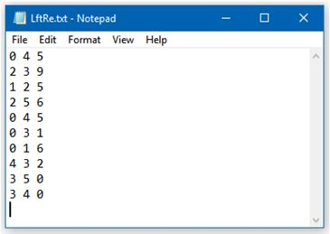
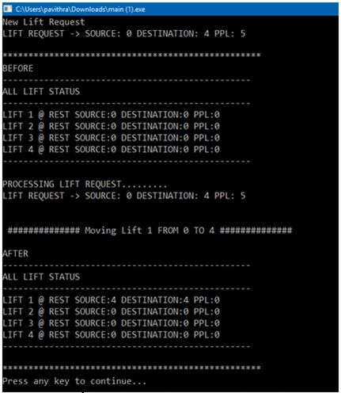
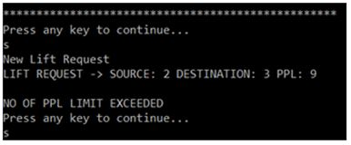
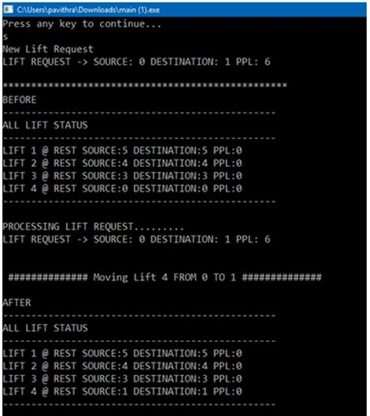

Simulation is a way of developing application or design simulating real world, the way which help in clarifying the real idea. The reasons upon using simulations may be for literature, cost, time, or safety reasons. Company problem appears when it is intended to equip its building with an elevator and want to know according to its needs the way to settle the elevator to best satisfy this needs. The way where we settle an Object-Oriented Software Simulator, concerning the logic and algorithm required to move the elevator between floors, giving the company a clear idea and leading it to choose the best design which satisfies this needs.
OBJECTIVES OF THE PROJECT
The company problem appears when it is intended to equip its building with an elevator and want to know according to its needs the way to settle the elevator to best satisfy this needs. Where this company my need from 1 to 4 elevators and the building will be of 100 floors (not including ground floor). The way where an Object-Oriented Software Simulator is to be installed, concerning the logic required to move the elevator between floors, giving the company a clear idea and leading it to choose the best design which satisfy this needs. An elevator (or lift) is a vertical transport vehicle that efficiently moves people or goods between floors of a building. They are generally powered by electric motors that either drive traction cables and counterweight systems, or pump hydraulic fluid to raise a cylindrical piston.
REQUIREMENT SPECIFICATION
a) The first and the foremost important hardware required is a
laptop of a personal computer with a minimum of 4GB RAM.
b) We
require an IDE where we can type our code and where it can be
compiled and executed successfully.
c) Next is the right
knowledge of Object Oriented Programming. Under it we are required
to study concepts such has classes and objects, function
overloading, constructors and destructors, inheritance concepts and
types of inheritance concept, data abstraction , data encapsulation,
visibility modes and their importance, friend functions and their
rules of application, static variables and functions, function
overriding, early binding, late binding, virtual functions concept
and pure virtual functions.
PROBLEM FEATURES
The problem concerns the logic required to move elevators between
floors according to the following constraints:
a) Having a unique control system, which control the elevators and
pick up the requests.
b) Each elevator has a set of m buttons,
one for each floor. These illuminate when pressed and cause the
elevator to visit the corresponding floor. The illumination is
canceled when the elevator visits the corresponding floor.
c) Each floor, except the first floor and top floor has two buttons,
one to request an up elevator and one to request a down-elevator.
These buttons illuminate when pressed. The illumination is canceled
when an elevator visits the floor and then moves in the desired
direction.
d) Continue traveling in the same direction while there are
remaining requests in that same direction.
e) When an elevator
has no requests, it remains at its current floor with its doors
closed.
The elevator algorithm is implemented in computer operating systems
as an algorithm for scheduling hard disk requests.
SNAPSHOTS
1) File where all the requests are stored
2) After processing the first request from the file
3) Condition when no. of passengers exceeds the limit 8
4) Processing another lift request from the file
FUTURE WORK PERSPECTIVES
Some of the future work that could be implemented:
a) Speed control may be available to the user of the simulator to
see different simulations with different speeds.
b) The elevator needs the ability to change directions if the user
decides to go down instead of up (and vice versa) when there are no
other requests for that elevator.
c) Elevator will be supplied by inventor, in the case of electricity
failure elevator will go down to the nearest floor and open its
doors.
d) An emergency alarm switch will sound an alarm when activated by a
passenger.
e) Elevator will be supplied by Priority system, which is used by
specific users like managers, where they can press certain code
making the elevator moving straight forward to the wanted floor
without stopping in any floor.